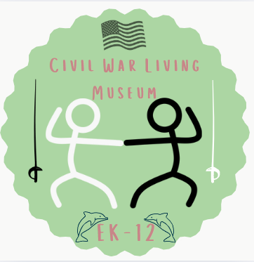

Map
Home
Map
Explore more
About Us
Welcome to the Emerson K-12 Civil War Living Muesuem!
At this Civil War Museum, we aim to teach, engage, and help you see the Civil War through a brand new lense. You'll have the chance to learn all about the events leading up to the war, about all the major battles of the war, understand where and why battles happened, and meet key characters that helped shape the Civil War.
©2025 Emerson Tech Inc. No rights reserved